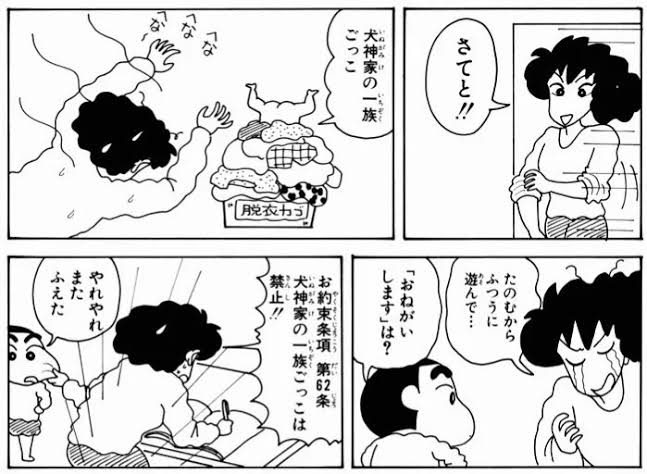
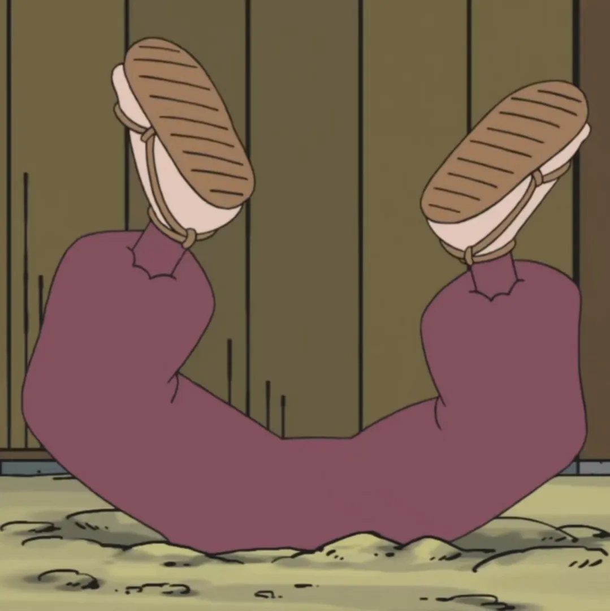
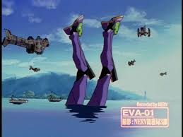
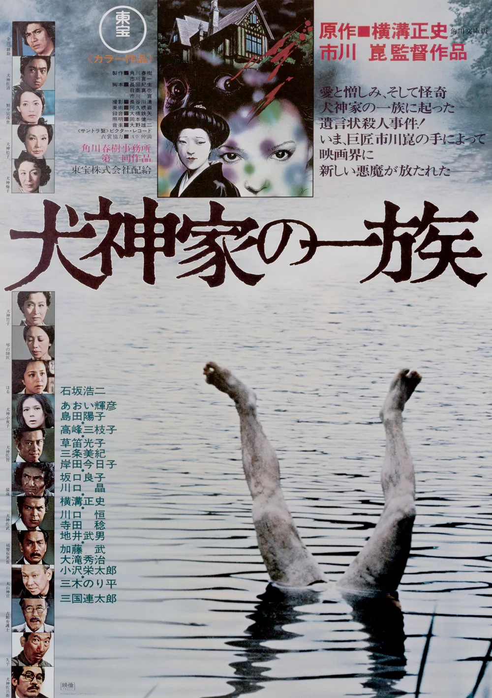
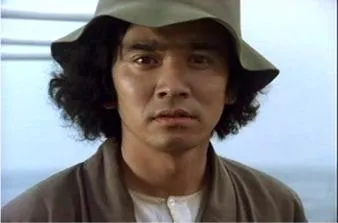
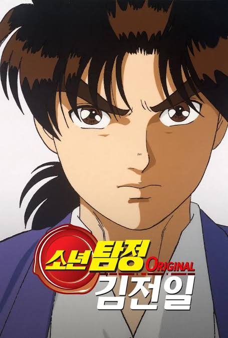

일본 만화에서 흔히 보이는 상체가 땅에 박히고 하체만 드러나는 자세
주로 싸움에서 졌거나 헛소리를 들었을 때 사용하는 연출인데
사실 옛날 일본 영화의 패러디다

탐정영화 이누가미 일족의 포스터
작중에서 강에 거꾸로 쳐박혀 죽은 시체가 나오는데
이 장면을 시체놀이 하듯이 흉내내는 것
그래서 짱구의 대사도 "이누가미 가의 일족 놀이"

그만큼 저 영화가 일본인들 사이에서 유명한데
저 영화 속 탐정이 긴다이치 코스케고

김전일이 맨날 명예를 거는 외할아버지가 이 사람이다

베지터가 원조인줄